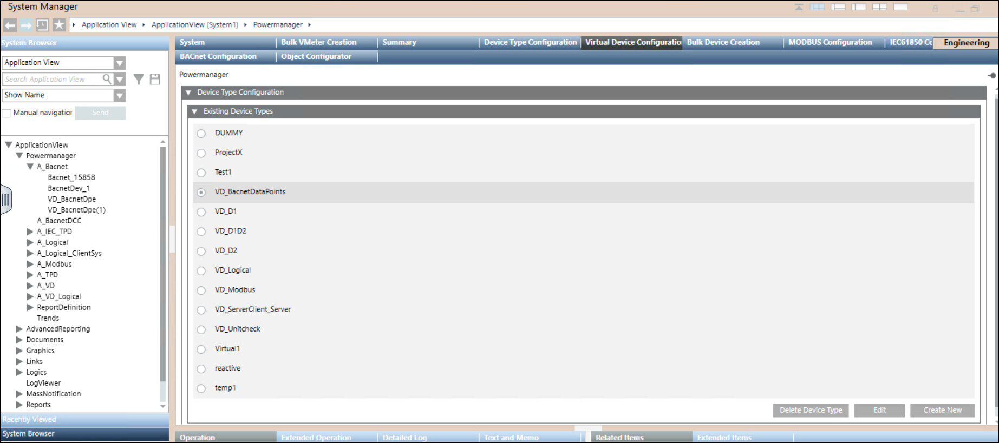
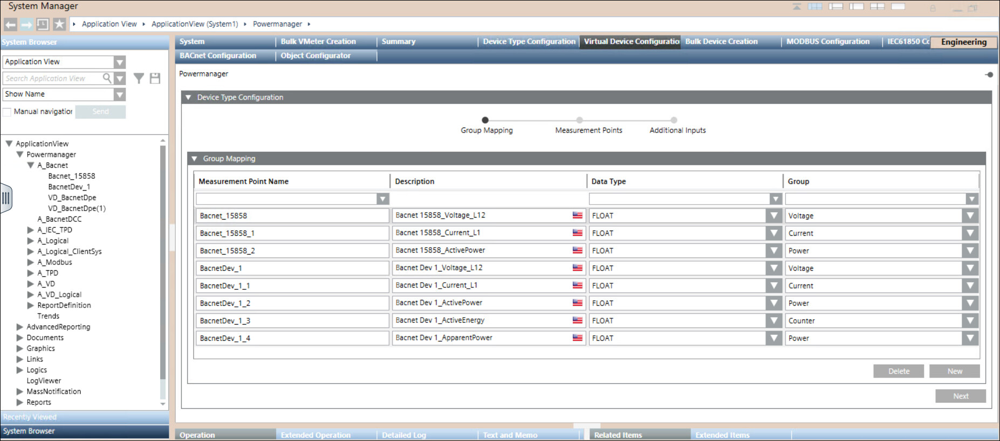
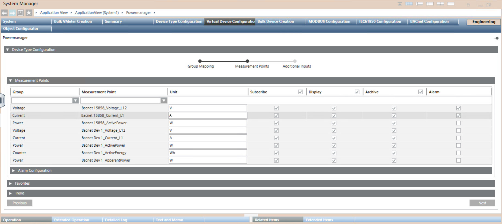
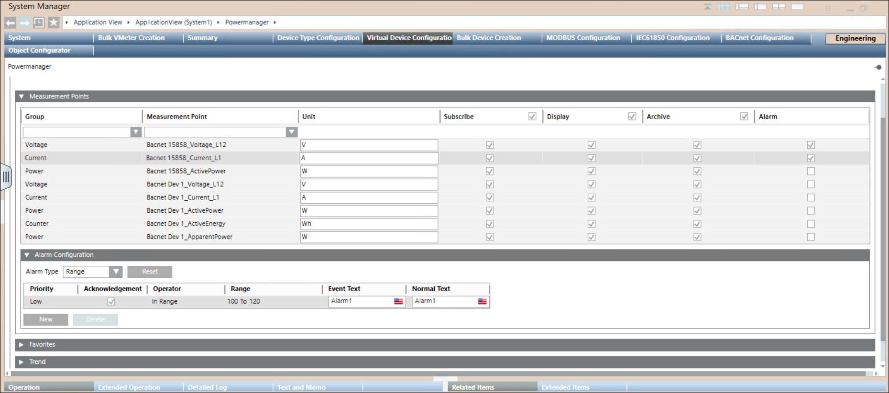
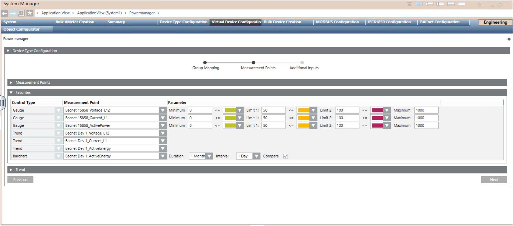
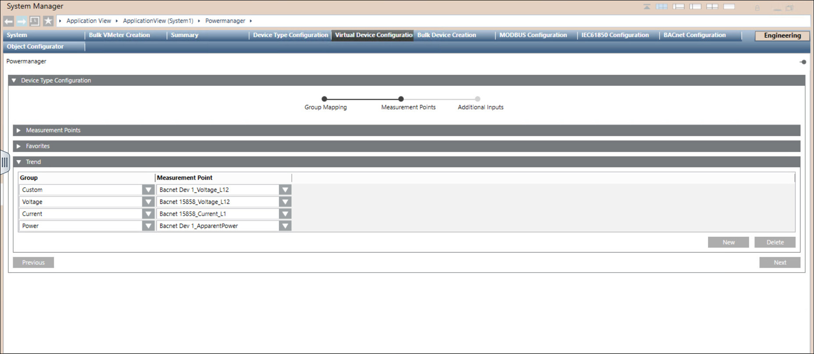
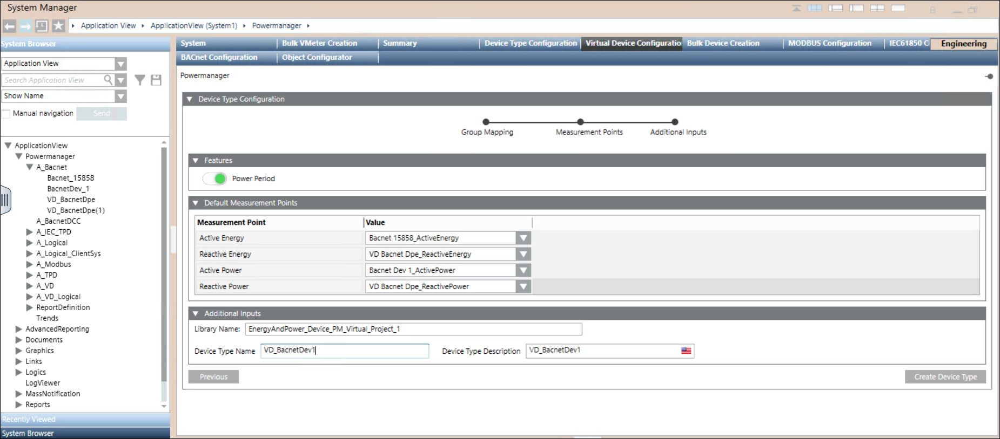

Virtual Device Type Configuration Workspace
In Engineering mode, navigate to Application View > Powermanager > Virtual Device Configuration tab.
Device Type Configuration Expander
Device Type Configuration expander, you can create, configure, edit and delete the device type.

Items | Description |
Create New | Allows you to create a new device type. |
Delete Device Type | Allows you to delete device type. |
Edit | Allows you to edit device type. |
Group Mapping Expander
Group Mapping expander, you can drag and drop the Mapping Measurement Point or create new Mapping Measurement Point.

Items | Description |
Mapping Measurement Point | Allows you to enter the mapping measurement point name. |
Description | Displays description of the mapping measurement point. |
Data Type | Allows you to select data point for mapping measurement point. List of Data Types that are available: FLOAT, INT, UINT, STRING, BOOL, ENUM, BIT, TIME. |
Group | Allows you to select the required group name for mapping measurement point. List of Groups that are available: VOLTAGE, CURRENT, POWER, POWER FACTOR, POWER PERIOD, COUNTER, THD, COSINE PHI, FLICKER, FREQUENCY, HARMONICS CURRENT, HARMONICS VOLTAGE, STATE, INFO, PARAMETER, LINKED PARAMETER, FLOW, VOLUME, TEMPERATURE. |
New | Allows you to create new mapping measurement point. |
Delete | Allows you to delete existing mapping measurement point. |
Measurement Points Expander

Items | Description |
Group | Displays the category of the measurement point. You can select the measurement points category from the dropdown box. |
Measurement Point | Displays the name of the measurement points. |
Unit | Displays the units of measurement points from the device and you can modify unit. |
Subscribe | By default the checkbox is checked in for the measurements points for which data has to be subscribed. |
Display | Select the checkbox for the measurement points to be displayed in the Operating mode > Overview Tab > Measurement Values. |
Archive | Select the checkbox for the measurement points for which data has to be archived. |
Alarm | Select the checkbox for the measurement points for which alarm has to be configured. |
Alarm Configuration Expander
Alarm Configuration expander allows you to configure alarms.

Items | Description |
Alarm type | The alarm type to be enabled for an event. |
Reset | Allows you to rest all alarm conditions from the table and reset the default alarm class. |
For Limit Priority Operator
| User defined values Low, Medium, High and Fault :> : Greater than , >= : Greater than or equal to , < : Less than, <= : Less than or equal to |
Acknowledgement | Select the checkbox |
For Range | The value, or range of values, for which an alarm is to be issued. Low, Medium, High and Fault In range, !.. : Not in range , || : OR, !|| : NOR |
Event text | The text to display when the alarm is issued. |
Normal text | The text to display when the alarm ceases. |
New | Allows to add new rows with default alarm class and values. |
Delete | Allows you to delete the selected alarm row. |
Favorites Expander
Favorite expander will display all the configured measurement points.

Items | Description |
Control Type | Displays the modes of representation of the parameters configured through three gauges, three trends and one bar chart. |
Measurement Point | Allows you to select the measurement points to be configured for the corresponding device. |
Parameter | Allows to set the limits of the gauges and the color for the representing the corresponding measurement time duration to be used in the bar chart. |
Duration | Allows you to select the duration time. |
Interval | Allows you to select the interval time. |
Compare | Allows you to compare the values by selecting the check box. |
Trend Expander
Trend expander allows you to select up to seven entries under the measurement point for single group type.

Items | Description |
Group | Allows you to select the group type. |
Measurement Point | Allows you to select the measurement points for which the trend have to be displayed. |
Features Expander
Features expander allows you to configure the Power Period by enabling the radio button.

Allows you activate/deactivate power period calculation.
NOTE: Power period feature is activated by default when atleast one measurement point has power period group.
Load profile period length for power period group type measurement points would be set to 15 minutes.
Default Measurement Points Expander
Default Measurement Points expander provides a table to choose related measurement points.
Items | Description |
Measurement Point | Displays all the selected energy and power related measurement points. |
Value | Allows you to select the energy and power related measurement point from the dropdown. |
Additional Inputs Expander
Additional Inputs expander provides more details on the device type.
Items | Description |
Library Name | Displays the library name. By default project level library will be displayed. |
Device Type Name | Allows you to provide the device type name. |
Device Type Description | Displays device type description, which is same as device type name. |